I worked on Small Business Advisors as the only designer assigned 100%. What started as a UX/UI designer role quickly became a full Product design role, since I had to work with high-level definitions of the product and grow from there, impacting not only on the experience and the visuals of the service but on the value proposition for the business side. I also worked on the initial content drafts for the landing page and the different tools (merchant facing and internal use), and produced some animations as well.
I had the chance to study Google Standards and developed a great dynamic within the team and with the client, making the process of discovery, ideation, and validation super straightforward.
Category
B2B, Customer service, Internal tools
Platforms
Web
Role
Product Designer
Time
8 months
Context
About Small Business Advisors
Small Business Advisors (SBA) is a Google My Business initiative that aims to connect small and medium business owners (merchants) with experts trained across Google products, so they can find all the help they need in just one place.
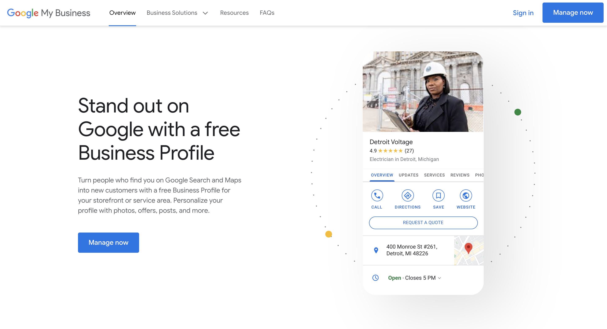
Google My Business (GMB) is a free and easy-to-use tool for businesses and organizations to manage their online presence across Google, including Search and Maps.
Problem definition
There were two main problems to tackle:
Merchants were often forced to visit different help desks when looking for help for different services from Google. This translated into a disjointed experience and long waiting times (these help desks are online services with queues).
Small and medium businesses owners had the preconception that Google services were meant only for large businesses and renowned brands, making it difficult for Google to reach them.
Objective
Provide small and medium business owners with a space for them to have a holistic approach to Google services through a new website and a standalone booking tool that allows them to book appointments. In these appointments the merchants would have video calls with Google Agents to address their questions/problems related to Google's product suite.
The launch of this system was expected for August 2020. Design, development and building processes had to be done following Google standards and internal procedures and tools.
Team
The team was fairly minimal since we wouldn't have to build a lot of functionalities. Small teams have the advantage that communication is more streamlined and is easier to get a sense of design limitations and opportunities based on technical and business constrains and other roles' inputs.
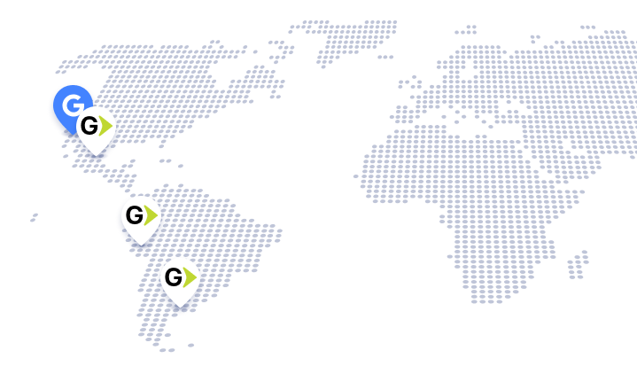
Our team spread through 4 timezones.
We were:
1 Product Owner (client)
1 Marketing Manager (client)
1 Project Manager
1 Tech Lead
1 Data Architect
2 Backend Developers
2 Frontend Developers
1 Product Designer (me)
1 UX Writer (client)
1 Illustrator (client)
Discovery
Users
Since time was pretty limited, I couldn't get into too much detail for User and Journeys, so I had to find a way to keep these simple but still actionable.
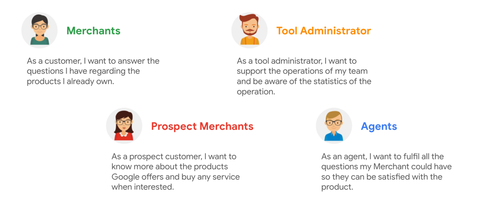
Journeys
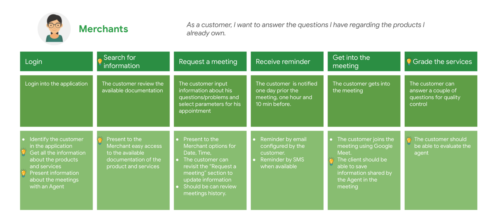
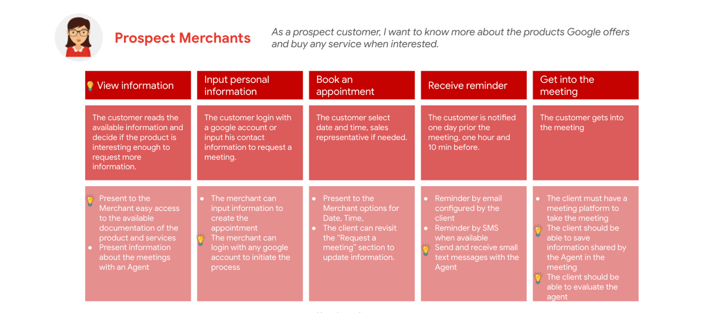
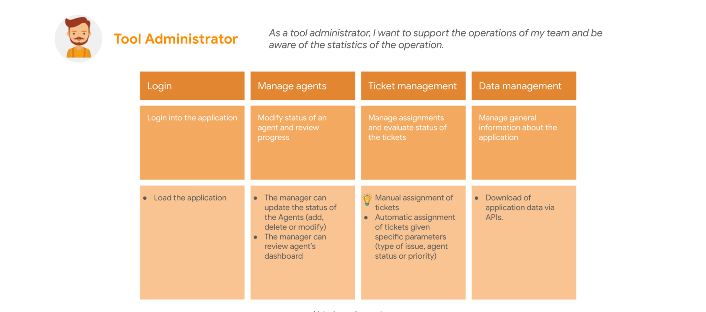
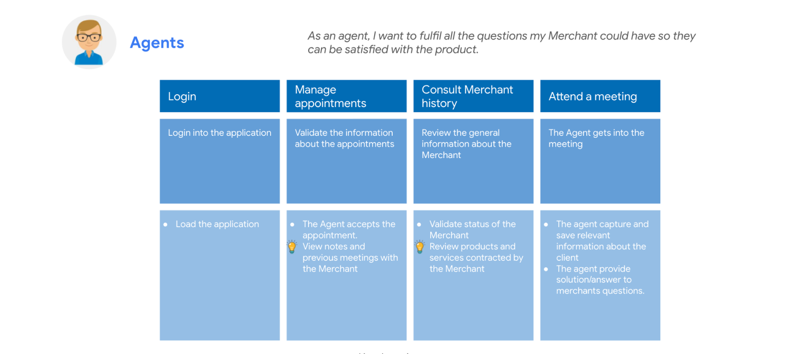
Service Blueprint
With users and journeys defined, I ran a Service blueprint workshop (~90mins) with the entire team so we could get on the same page early on the design process and get a lot of assumptions cleared. This proved to be an excellent way to get a common understanding of what we needed to build and how every piece of the product should work in context, and to set clear expectations for the client.
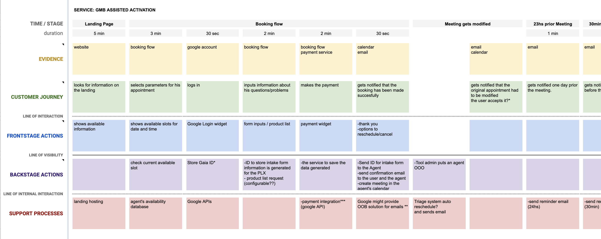
Service blueprint.
Strategy
After setting expectations and clearing assumptions, I laid out a very basic roadmap with a prioritization of features by User.
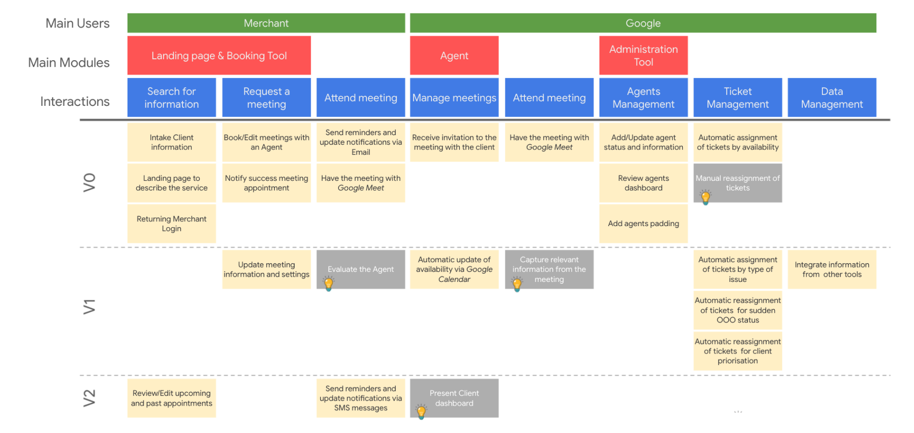
The first draft of our roadmap.
We ended up with four areas of focus:
Booking tool — The heart of the service, for merchants to be able to book an appointment with a Google agent.
Landing page — With information for new merchants, and easy access to the booking tool for current merchants.
Merchant panel — For merchants to be able to manage their future and past appointments.
Management tool — For Admins and Team leaders (at this point we decided they were separate users) to have an overview of the service and access to certain features.
Collaboration
As a next step we defined the Design workflow:
We would have design validation meetings and co-creation sessions with the client (PO and Marketing Manager) once a week, with smaller sessions on demand.
Details and general questions could be sorted through email or chat.
We would have access to a photographic library with images from merchants and their businesses.
Eventually we would have support from a UX Writer from Google to help us with the actual content and someone from the Illustration team as well.
Design files and prototypes would be made in Sketch using the Google Material components library. Dev handoff would be made through Sketch Cloud.
User flows
I wouldn't say user flows are part of a Discovery but, since they are focused on user objectives and the rest of the case study is organized by areas of focus, I don't really have a better place for them. =P
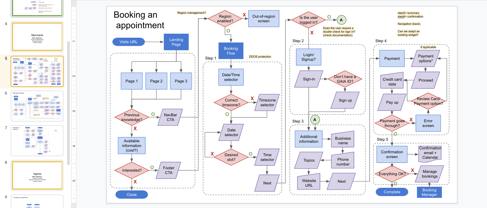
This is an updated version, so there might be inconsistencies with the rest of the case study.
Landing page
I decided to start with the Landing page since it would require the most iterations (we needed to nail the Marketing tids and bits in order to drive conversion) plus the experience for merchants would revolve around it.
Making it Googley
Google already had a proof of concept (PoC) of the landing page, but it was a very first draft and while it had good bones, it didn't look anything like a product from Google. I'm not a big fan of reinventing the wheel, so I took the PoC (for which we already had feedback from merchants) as a starting point and benchmarked other GMB landing pages to better align our own.
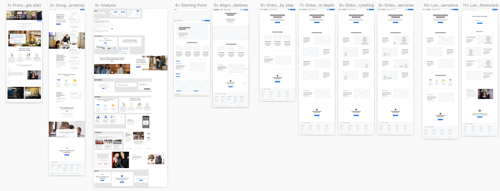
Left: Identified common patterns on Google landing pages. Right: Evolution of our landing page.
Making it interesting
I proposed two approaches next:
A conventional one — Using tried and tested patterns from other GMB landing pages, so merchants would feel SBA as something familar.
Trying something new — Going for a storytelling centric option, where we tell the story of a few merchants by showcasing different touchpoints with Google products and how Google could add value to their business.
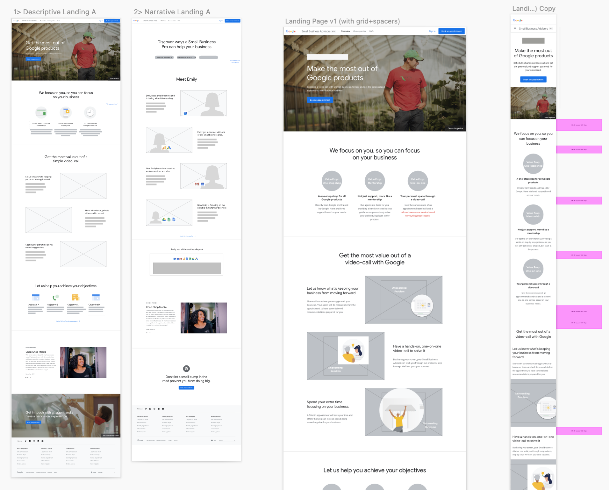
Left: Both options. Right: The inevitable third one. =P
We decided to try and mix both options by adding some of the storytelling ideas into the more conventional layout. I then went ahead and drafted the initial content; I lacked the specific expertise with Google's tone of voice, but their UX writing documentation was pretty good and it helped coming up with something that I could work with.
Since this landing was aimed to merchants, it was super critical to have proper content, so I made my case that we needed support from someone from the UX writing team, which we got later on.
Designing support pages
We wanted to have a specific page with possible scenarios, so merchants could have an idea of what to expect from the service. We also needed a Frequently Asked Questions (FAQ) page as per Google standards.
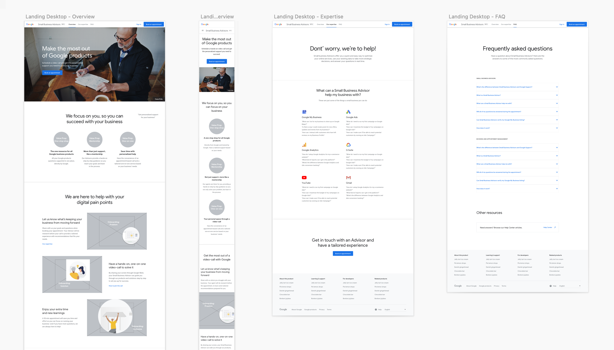
Updated Landing (with mobile proposal), Expertise, and FAQ pages .
At this point I had established a good rapport with the client's team and noticed they had a great understanding of the scope of every meeting, so I felt confident enough to propose some pages directly using Google Material without worrying that a meeting would derail into discussing styles.
Booking tool
Once I had the first approach for the landing page validated I started drafting the first approach to the Booking tool, so I could work with both flows in parallel.
Lo-fi prototype
I drafted the first iteration using just pen and paper and quickly put together a propotype to tackle navigation through the flow.
My first intention was putting as much value as possible before asking the merchant to log/sign in (the last step was all about personal and business data that we could extract from their Google account).
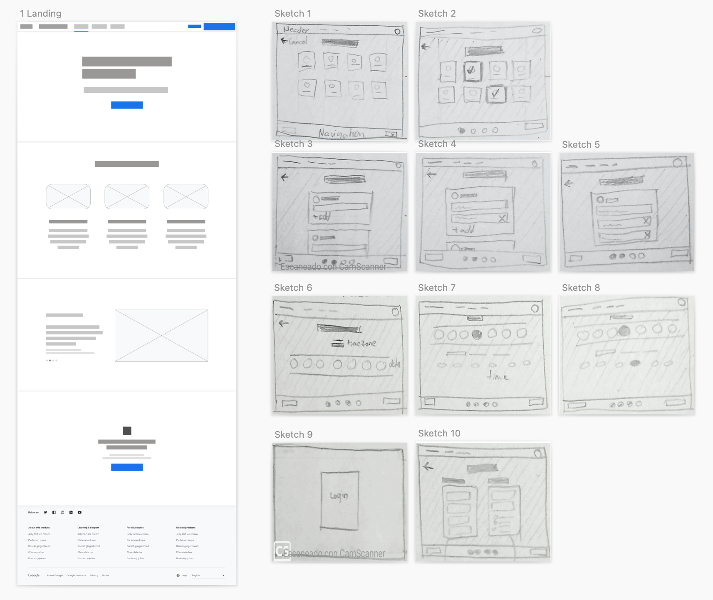
The very first draft for the Booking tool.
Mid-fi prototype
When we tested the first prototype, we identified that the critical step was date/time selection, since it was the only thing out of the merchant's control, and it would be a better experience for them to know that they're going through the flow with a slot already selected.
We also needed to put the login component as early as possible on the flow to cover some security concerns. With the date/time selector having the most value, we could afford leaving it public and putting the rest of the steps behind auth.
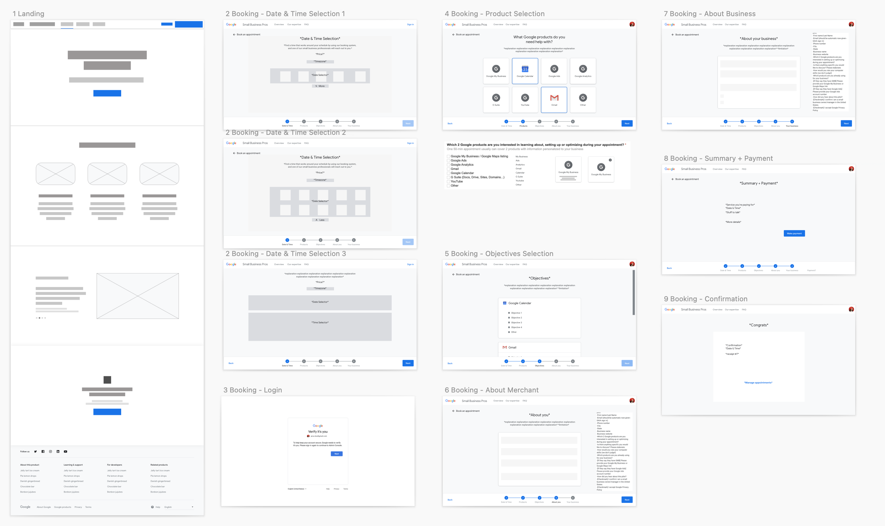
With navigation out of the way, I could start working on the specific steps.
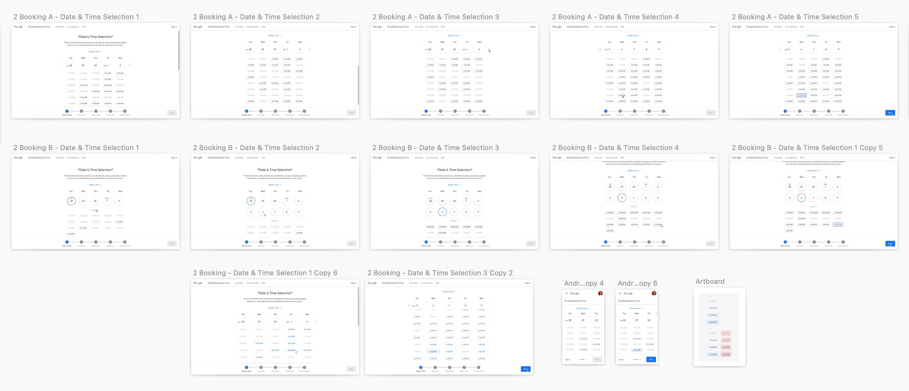
Top: Time/date selector exploration. Bottom: Time/date selector final design (desktop and mobile).
After detecting how important the date/time selector step was, I paid special attention to it, making sure the experience was consistent and accesible in different breakpoints, from desktop to mobile.
Merchant panel
With the Landing page and the Booking tool on track, I then switched my attention to the Merchant panel which was pretty straightforward.
Merchants needed a place where to:
See information regarding their next appointment (v0 functionality), and being able to join the meeting.
Reschedule/cancel a meeting, if possible (v0 functionality).
See details about past and future appointments (v1 functionality).
See their payment information and email notifications settings (v1 as well).
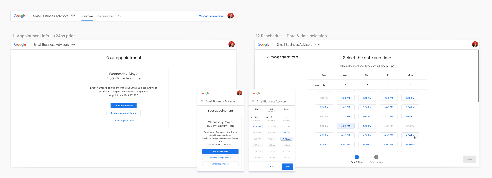
v0 Merchant panel.
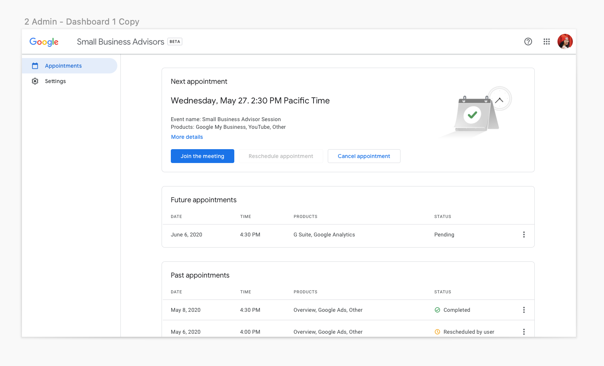
v1 Merchant panel.
Management tool
The Management tool serves two users:
Team Leaders — An internal user responsible of a group of ~10 agents at a specific location. This user manages the schedule of their agents and is in charge of solving issues with merchants.
Admins — This user is responsible of the high-level part of the service and how it performs, and manages different locations and team leaders.
Team leader
The first iteration was around the Team leader (TL), since it was needed to provide operational support to Agents. Being an internal tool I focused on providing information in a clear and concise way so they could take action when needed.
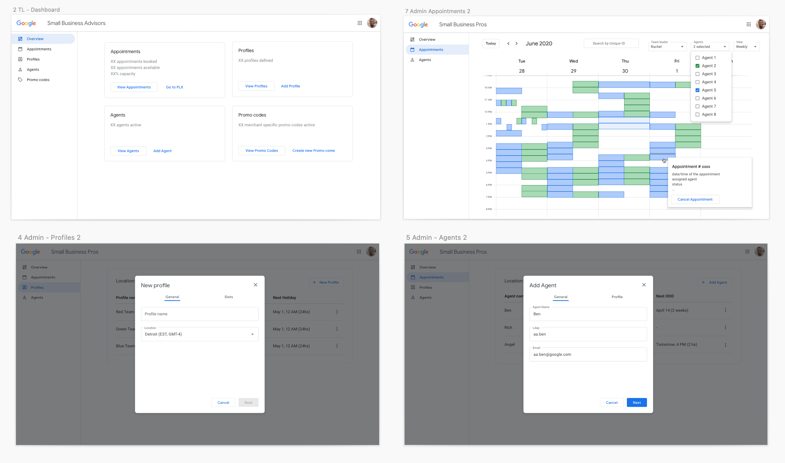
The first set of features for TLs with well-known Google patterns, inspired by Calendar and GSuite.
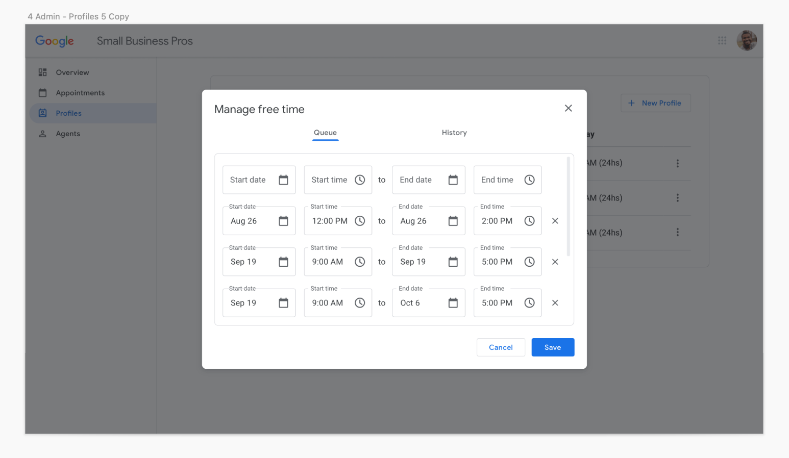
Managing Agent's time-offs.
In this first iteraion, TLs were able to:
Check the status of a specific appointment and reschedule/cancel it.
Add/edit/delete Agents on their team.
Define profiles to manage appointment slots and asign Agent to the profile
Manage Agent's time-offs
Admins
The Admin features could wait until later, when the service was already running, so they were tackled on the second iteration of the tool.
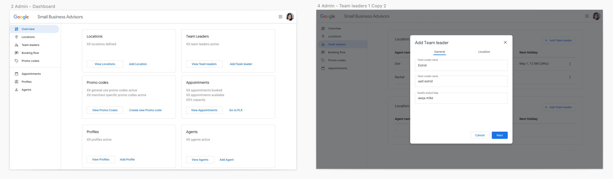
Left: Admin dashboard. Right: Adding a TL.
Admins were able to.
Add/edit/delete Locations (to scale the service to new regions).
Add/edit/delete Team leaders and asign them to a Location.
Manage Promo codes (either one-use only or as part of a marketing effort).
Have access to the specific TL's dashboard (appointments, profiles, and agents) to analyse and/or manage when necessary.
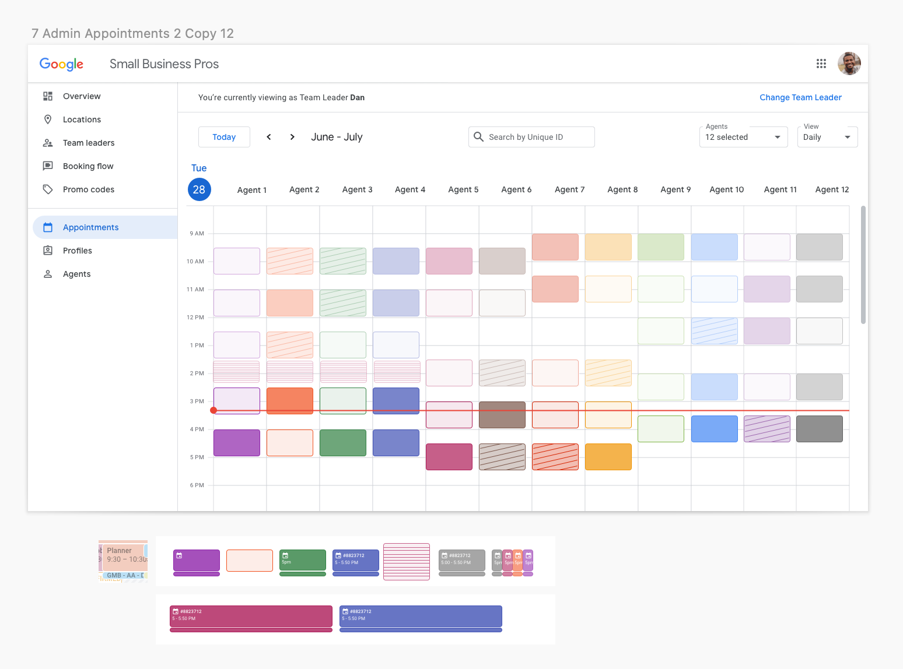
Top: The view of a specific TL from the Admin's perspective. Bottom: Style exploration.
We had direct contact with both TLs and Admin users, so we could gather their feedback and build something tailored to their needs. Most of this feedback came from interviews and co-creation sessions.
Please note that in order to access the booking tool you'll need a VPN since the service is currently region-locked to the US.
Next steps
After building the MVP and having 2 iterations on it we had a pretty solid product and the project entered a phase of stabilization, while we were seeing an influx of merchants using the service. At that point, I got rotated from the project since we were doing mainly maintenance, but we still had some features outlined for the next version:
Landing page — Addition of onboarding video. Visual and conceptual revamp of the Expertise page.
Booking tool — Additional step to gain insight about the merchant level of expertise so we can offer a product aligned to their business needs. Option to talk again with a specific Agent.
Management tool — Offer enhanced metrics on the Dashboard. Enable Admins to customize the Booking flow. Apply Machine Learning to help automate slot parametrization in an efficient way.